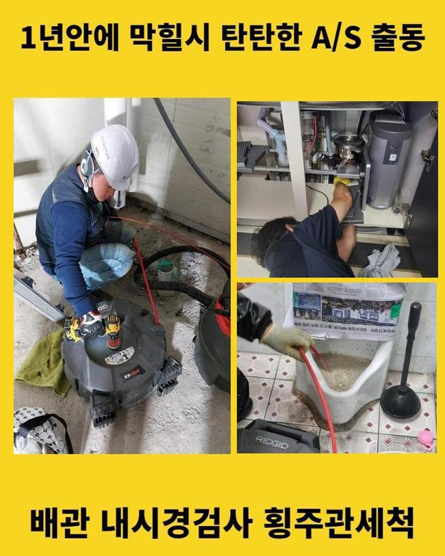
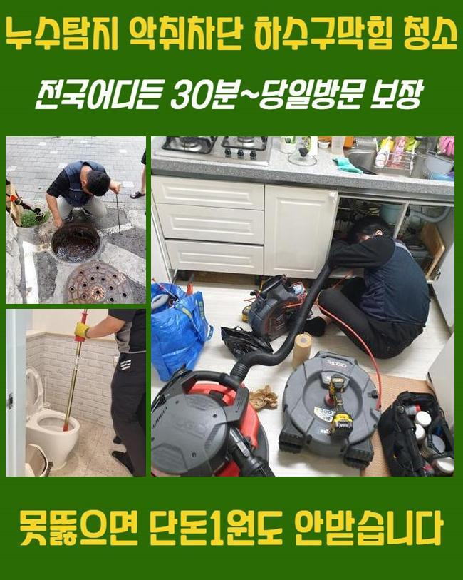
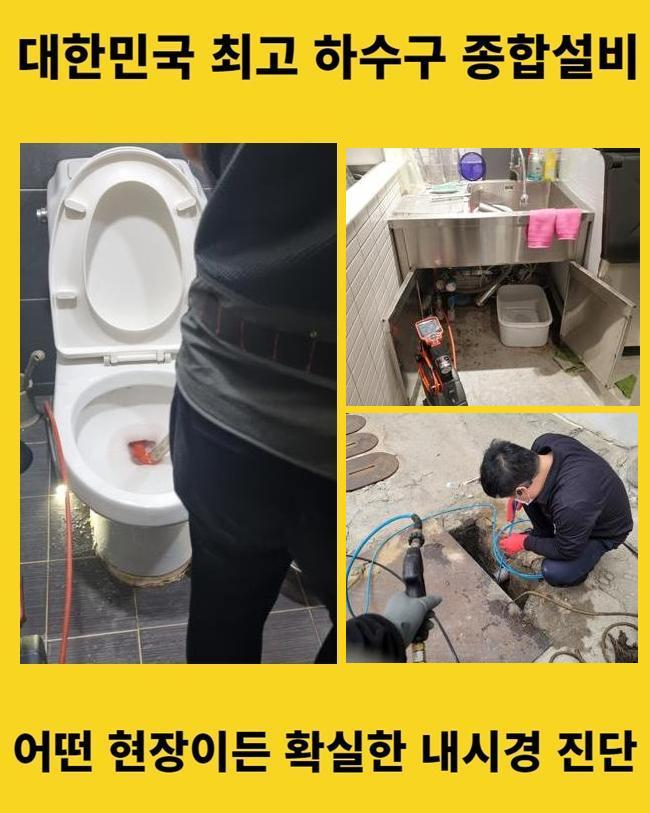
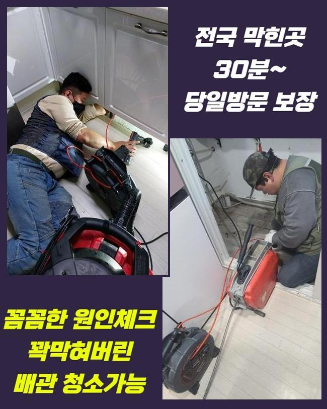
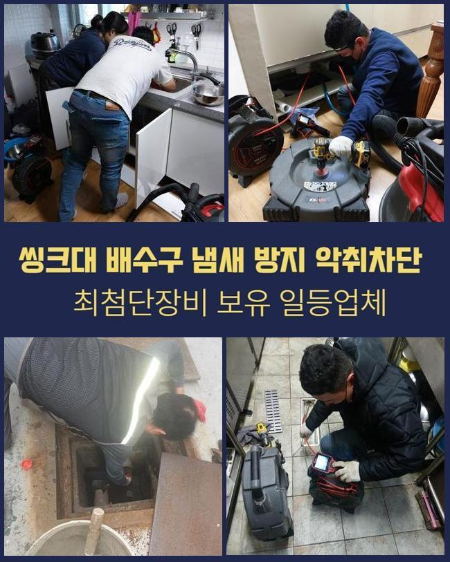
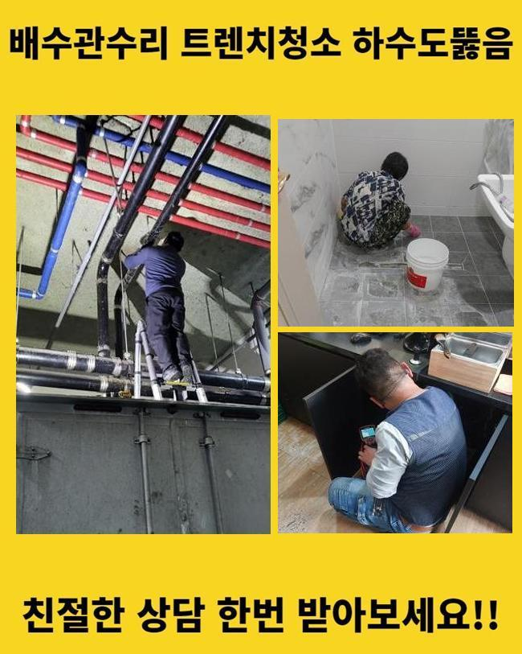
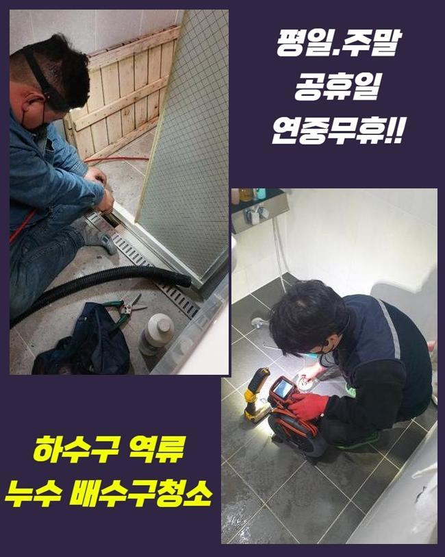

🏠 중구 방산동하수구역류 저동2가 하수구청소장비 출장설비
용인 하수구막힘 전문 시공 후기

📋 작업 개요
- 위치: 용인
- 서비스 유형: 하수구막힘, 배관막힘, 역류해결, 배관청소, 설비공사
- 작업 일시: 2025. 5. 15. 13:29
- 업체명: 하수구수사대 (010-5615-2118)
🔍 문제 상황
중구 방산동하수구역류 저동2가 하수구청소장비 출장설비
근래 소비침체로 인해서 사업자분들이 괴로운 상황에 처해 있으십니다
그 가운데 세면대에 물이 안내려가는 상황에 부닥친다면 심난함은 한층더 심해질 거에요
금번 문의하신 장소는 이틀전 인테리어공사를 끝마친 곳이었는데요
경기가 안좋아진 상태에서 음식점의 수익률을 높여보려는 생각이었다고 말하셨어요
이러는 와중 느닷없이 물이 안내려가는 상황이 벌어져 괴로운 정황이라 말하셨답니다
이렇게는 영업을 시행할수 없으므로 조속한 수리가 요망되었죠
내부 세면공간을 사용못하는 상황 가운데 일반손님들을 받기는 어렵겠죠
계획한 날에 오픈하려면 당일 시공이 되어야 했는데요
저흰 빨리 기기들을 대동하여 작업현장으로 곧장 이동하였죠
도착해서 배관쪽으로 가서 모습을 보니 세면기 주위에 물빠짐이 안되고 있었답니다
해당 사태가 연속된다면 퀴퀴한 내가 화장실의 배수시설을 넘어서 음식점 내부로 진입할수도 있죠
이것을 예방하려면 더욱 사태가 심화되기전 수선을 시행해야 하죠

🔎 원인 분석
💡 전문가 진단: 정밀 진단 장비를 사용하여 슬러지의 고착 여부를 판명하고 타격/세척 작업을 실시했습니다.
저희팀은 전면적 시공을 하기전 바닥에 깔린 오염물질을 흡입기로 소제하였습니다
이것을 시행치 않으면 배관 안을 온전히 확인하지 못할수 있고 작업시간이 제때 마무리 안될수 있죠
이후에 무엇으로 인해 배관정체가 촉발되었는지 간파하려는 목적으로 준비한 내시경cctv를 관로속에 넣어 조사해보기로 합니다
내시경으로 막힘을 일으키는 이물의 양을 분명하게 검사해야 이후 과정을 체계적으로 시행할수 있습니다
관속을 살펴보았더니 통상적 모양새와 다른 형태라는걸 알게 되었답니다
대개 파이프 내측엔 각종 이물질들과 석회성분이 가득하여 체증이 일어나곤 합니다
그러나 이 식당은 타일가루와 에폭시 찌꺼기가 관을 메우고 있었답니다
손님들이 방문하면서 이런 건설자재 찌꺼기들이 배수관으로 흘러들어가기도 합니다
하지만 여긴 영업활동을 잠깐 정지한 상황이었으므로 그리 될 소지는 낮았죠
또한 시멘트 자재가 나타났다는 것은 리모델링 담당자가 범인이라는 명백한 이유였죠
이것을 한층 확정적으로 만들었던건 하수관 하단부에서 흰색 찌꺼기를 목견한 때였답니다
이것은 타일공사를 진행할때 활용하는 에폭시 본드였죠
통상적으로 화장실의 바닥면 타일시공을 진행할때 쓰이죠
리모델링을 맡은 기술자가 마무리 단계에서 잔존하던 쓰레기들을 하수구에 버렸던 거예요

🔧 작업 과정
빨리 공정을 끝내려고 하수구 안으로 이물질을 투입시킨게 확실해 보였어요
먼저는 샤프트 파쇄장비와 흡입기로 하수관 내측의 잔재들을 자그마하게 갈아내고 흡입하여 배관막힘 문제를 해결하고자 했는데요
그러나 이것으론 겉부분만 소멸되어 문제해결이 무망하였습니다
관속에서 굳어져버린 퇴적물이 샤프트기기를 통해서도 분쇄가 어려운 모습이었어요
해당공정을 이어나간다면 기기고장이 나타날수도 있으며 시간도 늘어지게 됩니다
그러하기에 곧바로 적합한 대책을 세워서 수선하는 게 마땅하겠죠
이에 이에 저희측은 굴착을 통해 정체를 타개하는 방안을 마련하였습니다
쉽게 이야기해서 땅을 파서 배관을 찾고 이물이 가득한 하수관을 교체해주는 업무입니다
해당 업무는 배관작업에서 기초라고 볼수도 있지만 단행하기 힘겨운 부분이기도 하죠
땅을 파내고 문제의 관로를 절제하였고 안쪽을 관측해 보았더니 시멘트 잔재들이 굉장히 많이 상존하고 있었네요
이것들을 저희측에서 다이렉트로 인테리어 사장님에게 설명해드렸고 금액을 부담하시겠다고 약속하셨죠
저희팀이 전문기기로 조사하여 알려드린 것이어서 확실할수 있었어요
견고해진 물질들은 정과 같이 날카로운 도구로 파쇄하려 하여도 손쉽게 처리할수 없는 모습이었답니다
고객께선 그러한 정황을 확인하시고 믿기지 않는다는 표정을 지으시면서도 상대적으로 간단히 처리되어 마음을 놓을수있게 되었다 하셨죠
배수관을 탈거한 자리에 PVC배수관을 새롭게 조립해주었습니다
이후에 관로속에서 배수가 잘되나 테스트도 해보았죠
더더욱 아래쪽으로 빠져나간 성분은 없었기 때문에 물흐름이 잘 유지되었어요
시공중에 발생한 노폐물들이 두포대 가량 상당한 양이었습니다
혹시라도 배관문제를 파악못한 상황에서 음식점 오픈을 감행하였다면 피해상황은 더욱 늘어났겠죠
다행스럽게도 직전 진단되었기에 해당되는 문제를 대처할수 있었죠
거듭 파이프에 역류나 정체구간은 없나 검사해 보았죠
그후에 전 기능이 온전하게 복구된걸 목도할수 있었어요


✅ 작업 완료
문제가 되었던 하수구가 교체되었기에 이후 문제는 생기지 않을거라 확신하였죠
이날 모든 공정이 끝났기에 의뢰자님은 예정일에 업장 운영을 속행하시게 되었답니다
굴토 진행한 벽면은 원복하였으며 화장실의 바닥부위는 방수시공을 하고나서 타일접합 공정도 단행하였답니다
저희팀은 통수작업 말고도 관계된 마무리 작업또한 능수능란하게 이행해 드린다는 걸 말씀드립니다
혼자서 막힘문제를 처치하는 상황도 존재하나 이번 현장과 같이 비경한 사태에 직면했다면 전문가를 찾는게 마땅하죠
연락주시면 어떤식으로 작업해드리는지 말씀드릴게요




⚠️ 하수구 배관 막힘 예방 및 관리 가이드
- ✅ 머리카락, 비닐, 물티슈 등 물에 분해되지 않는 이물질은 하수구 유입을 절대 금지해 주세요.
- ✅ 하수구 거름망을 씌우고 모여진 이물질은 주기적으로 쓰레기통에 바로 비워주셔야 합니다.
- ✅ 배관 노후가 심할 경우 이물질이 더 쉽게 걸리므로 주기적인 배관 세척(고압세척 등)을 권장합니다.
- ✅ 작업 후 1년 이내 재발 시 하수구수사대에서 무상 A/S 보증 서비스를 제공합니다.
💡 핵심 정리
- 확실한 장비 작업(내시경 점검 및 샤프트 스케일링)으로 원인을 뿌리 뽑습니다.
- 작업 후 1년 이내에 동일한 부위 재발 시 100% 무상 A/S 서비스를 보장합니다.
- 서울 · 경기 · 인천 전 지역에 24시간 언제든 긴급 출동할 수 있도록 항시 대기 중입니다.
❓ 자주 묻는 질문 (FAQ)
🚨 용인 하수구막힘 문제로 고민이신가요?
정확한 원인 진단과 확실한 시공으로 재발 없는 해결을 약속드립니다.
24시간 긴급 출동 | 서울 · 경기 · 인천 전지역 | 1년 내 재발 시 무상 A/S